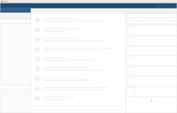
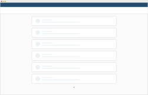
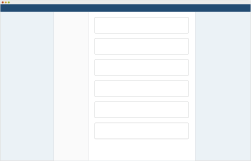
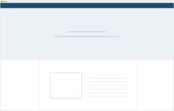

웹 앱 화면 구성은 빠르고 정확한 메시지 커뮤니케이션이 이루어지도록 돕는 것에 중점을 둡니다.
브라우저 가로 영역 전체를 사용하는 풀 사이즈의 레이아웃을 사용하며, 하나의 gnb 아래에 lnb/chat/toolbar 세 영역으로 나뉩니다. 중앙 패널 영역에서 메시지 확인과 전송이 이루어집니다.
왼쪽 패널은 나의 토픽 및 1:1 메시지 목록을 보여줍니다.
또한 파일 리스트/메시지 검색/즐겨찾기/멘션 4가지의 보조 탭으로 사용할 수 있는 오른쪽 패널은 클릭에 따라 열고 닫기가 가능합니다.
필요한 경우 오른쪽 패널을 열어두고 파일 리스트, 메시지 검색, 즐겨찾기 리스트, 멘션 리스트를 바로 확인할 수 있으며, 중앙 패널만을 넓게 사용하고 싶을 경우 닫아둘 수도 있습니다.
Icons
icon-font를 이용하며 icon-으로 class 명이 시작한다. 이곳의 class는 모양을 나타내기 위한 클래스로 페이지내의 스타일지정시 되도록이면 style class 명을 따로 추가해서 선언한다.
App—JANDI Connect
웹 앱 내의 잔디 커넥트 페이지 구성

잔디 커넥트 페이지는 최대 가로 폭(width)을 갖고 있으며 중앙 정렬 레이아웃입니다. 또한 각각의 독립된 연동 기능을 개별적으로 설정하고 관리하기에 적합한 카드 레이아웃을 사용합니다.
Admin
웹 관리자 페이지 구성

어드민 페이지는 최대 가로 폭(width)을 갖고 있으며 중앙 정렬 레이아웃입니다. 왼쪽 사이드바와 컨텐츠 영역으로 나뉘는 구성으로 왼쪽 사이드바에서 어드민 페이지의 메뉴들을 확인할 수 있습니다. 컨텐츠 영역은 페이지 성격에 따라 적합한 레이아웃으로 구성합니다.
Landing Page
랜딩 페이지 화면 구성

잔디 랜딩 페이지는 상단 메뉴 영역과 Header 이미지 영역, 그리고 최대 너비가 지정된 컨텐츠 영역으로 구성되어 있습니다.
Grid System
잔디의 그리드 시스템은 10분할 Column을 사용합니다. 각 Column의 여백은 전체 가로폭에 따라 8px(small), 12px(normal), 24px(large)을 적용합니다.